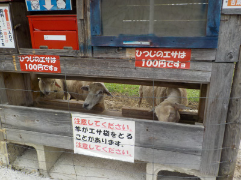
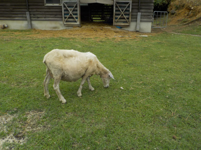
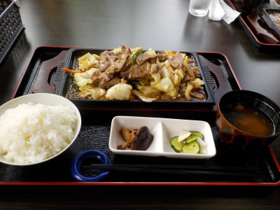

吉栗の郷でジンギスカン定食を食べました。
2023/06/11

ジンギスカン定食を食べる前に羊を見ます。

羊はエサが欲しいみたいで、羊牧場から離れようとすると大きな声で鳴いていました。
なんか食物連鎖を実感しました。

ジンギスカン定食1500円です。
普通に写真を撮ったので、遠近法でご飯の割におかずが小さく見えています。実際はボリュームがありました。
美味しかったので満足して帰りました。
「飯の原農村公園」にある、「吉栗の郷」にある、食堂「吉栗のお食処おちらと」になります。名前が分けてるって事は何か思い入れがあるんでしょうね。